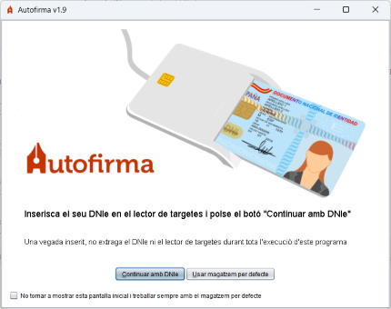

Esta pantalla només apareixerà si s'ha detectat un lector de targetes intel·ligents instal·lat i configurat en el sistema. Ací el programa queda a l'espera que l'usuari inserisca el seu DNI electrònic en el lector o al fet que indique que no desitja utilitzar el DNIe.

L'usuari pot inserir el seu DNIe en el lector i polsar el botó "Continuar amb DNIe" per a avançar signar amb el seu certificat de signatura del DNIe (no és necessari tindre instal·lats els controladors del DNIe) o polsar el botó "Usar qualsevol certificat" o la tecla Fuita si desitja utilitzar qualsevol certificat importat en el seu sistema operatiu.
Una vegada seleccionada una opció, se li mostrarà la pantalla de signatura.